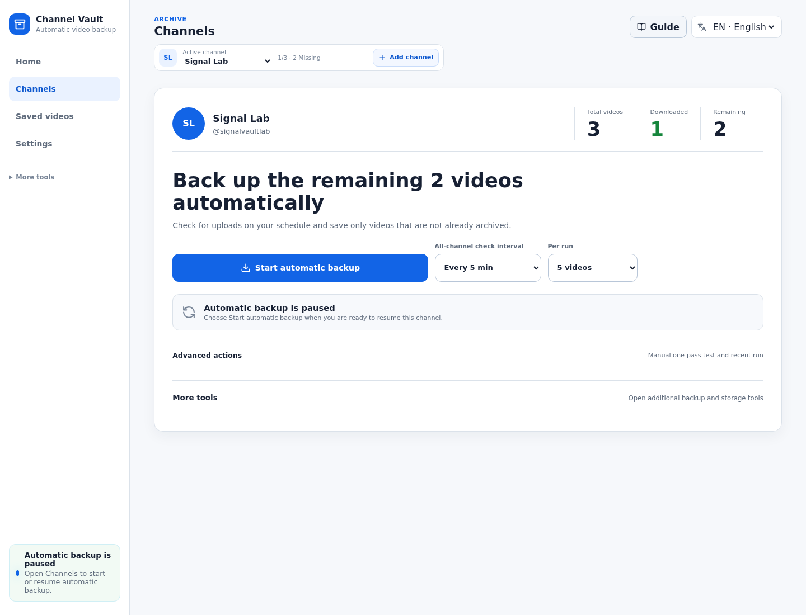
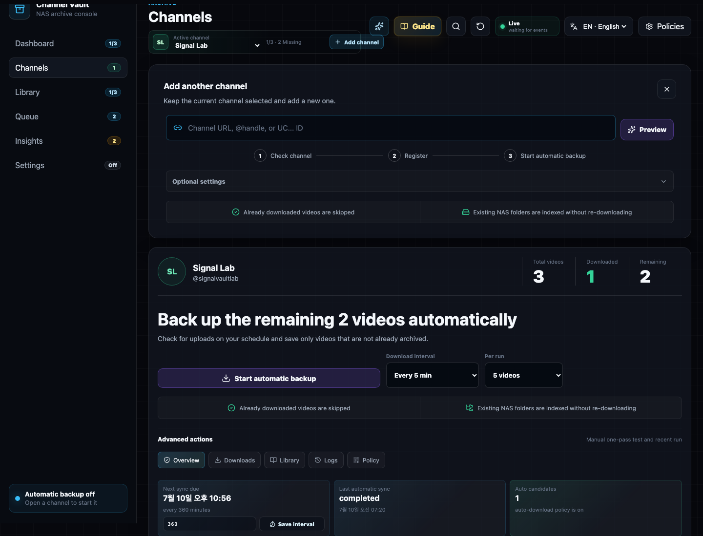
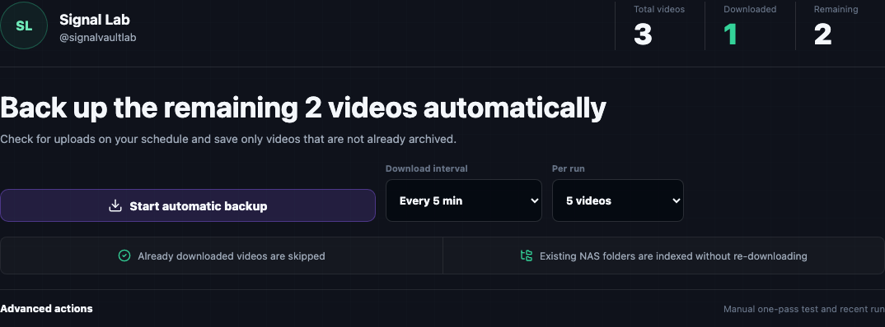
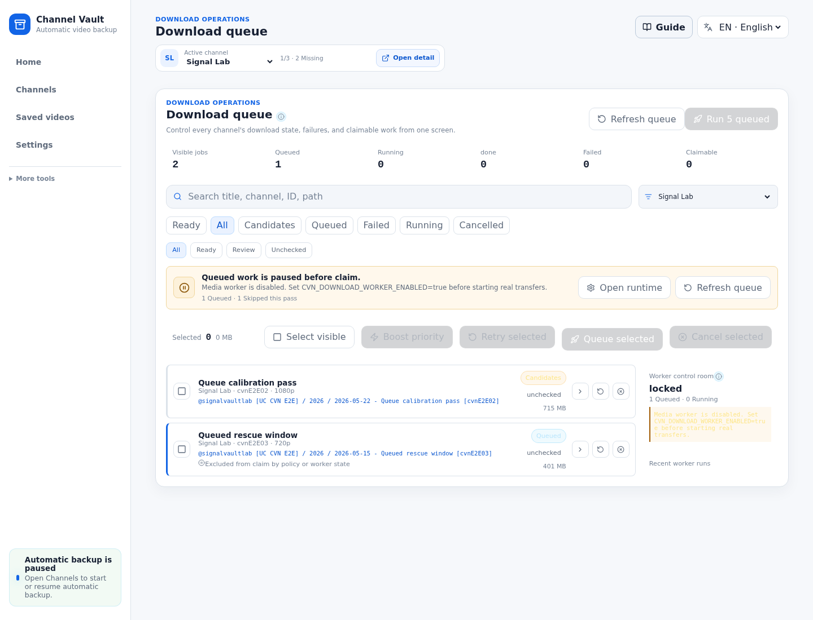
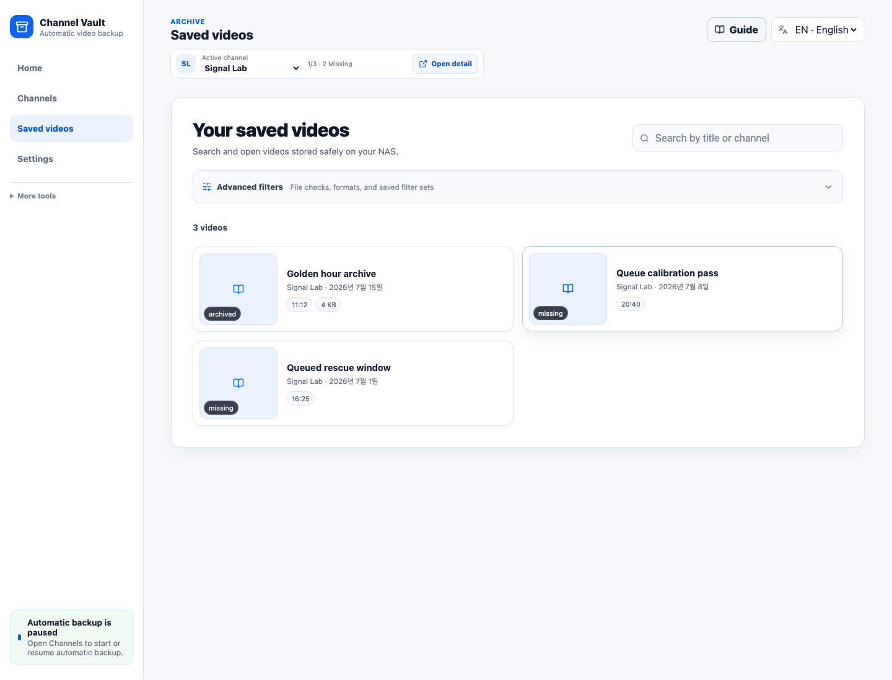
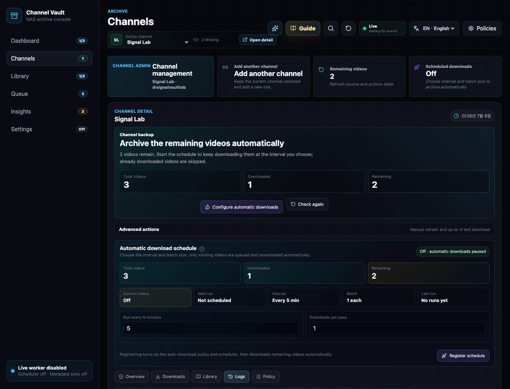
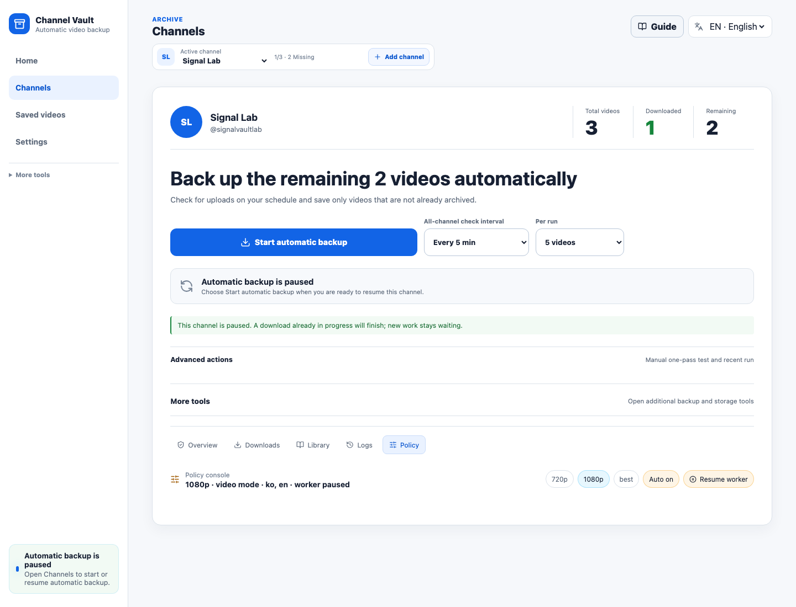
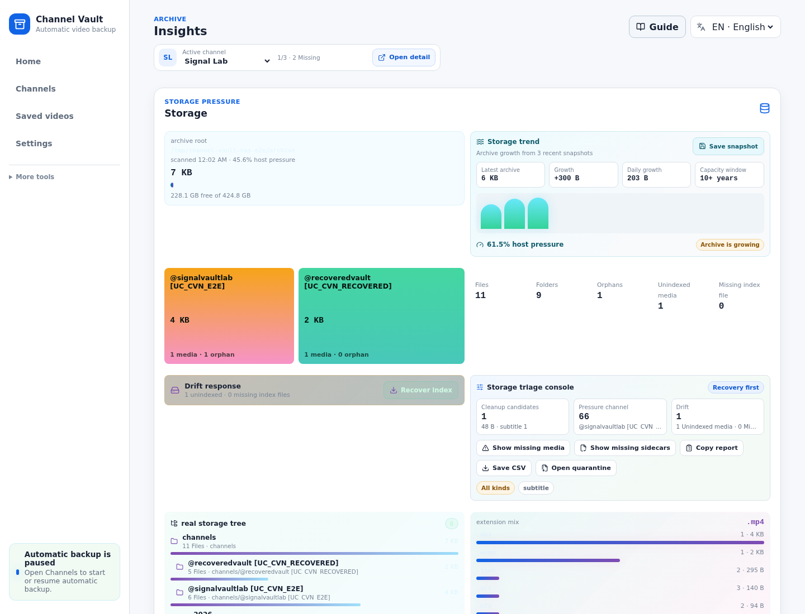
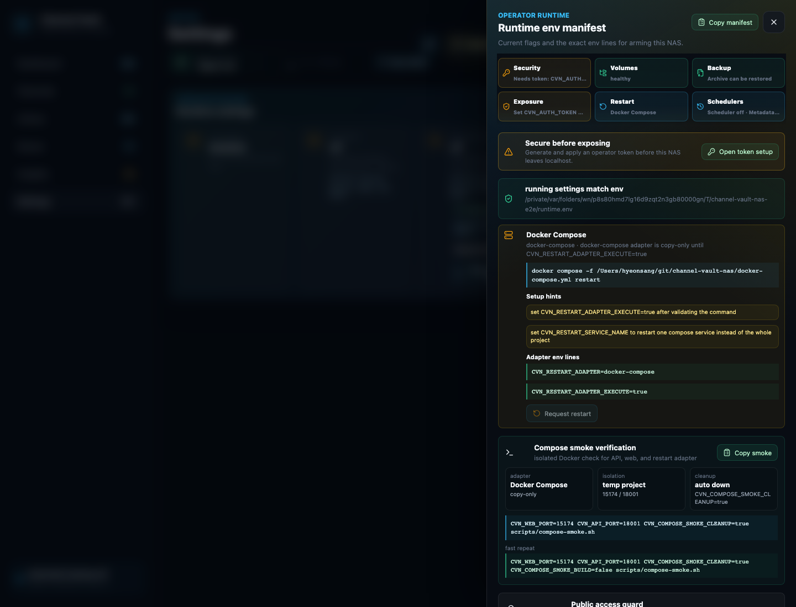
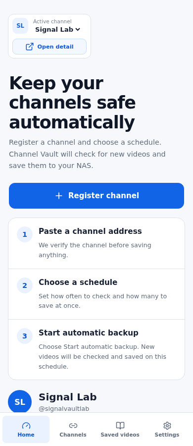

1
Dashboard
Paste a channel URL, handle, or channel ID.
Use the first backup wizard instead of hunting through settings or tabs.
This screen-by-screen manual explains how to register a channel, sync metadata, skip videos that already exist on disk, stage only missing videos, run bounded download passes, and verify the local library.
Analyze, review, register, sync, confirm, verify.
Real downloads require an explicit confirmation modal.
A DB row is not archived unless the media file exists.
Keep local test builds behind LAN/VPN access controls.
A fresh install starts with the first channel backup wizard. You can
paste a YouTube channel URL, @handle, or UC...
channel ID, review the plan, and stop at the download confirmation
before any real transfer begins.
Use the first backup wizard instead of hunting through settings or tabs.
Check the channel name, video count, estimated size, save folder, first videos, and safety notes.
The app registers the channel if needed, syncs metadata, stages missing videos, and opens the confirmation modal.
Click Start up to 5 only when the download engine is enabled and the bounded pass looks right.
After completion, Library and coverage counters should reflect actual media files.
Use the folded safe demo and import options when you want a local fixture without YouTube calls.
youtube-dl --download-archive archive.txt: already
downloaded videos are skipped. The difference is that skip decisions,
candidates, queue state, and library verification are visible.
On an empty workspace, the dashboard starts with the first channel backup wizard. After a channel exists, it becomes an archive cockpit that summarizes coverage, backup queue pressure, storage pressure, runtime state, and the next useful action.

@handle, or UC... channel ID and click Analyze channel.Start first backup to register, sync, stage missing videos, and open the confirmation modal.Start up to 5 in the modal starts real downloads. If the download engine is off, open Settings first.
Channel detail is split into Overview / Downloads / Library /
Logs / Policy. Use Overview for status and Downloads for the
actual staging workflow.

New video check refreshes YouTube metadata and source state.Download new only stages missing videos and opens a confirmation modal.View progress opens the queue filtered to the current channel.The Downloads tab combines candidate generation, preflight, queue registration, dry-run, and real worker pass controls. Real transfer starts only after an explicit confirmation.


Worker is paused: channel policy or maintenance mode blocks claims.Worker off: enable runtime worker settings and complete apply/restart.0 claimable jobs: there are no staged jobs that the worker can claim.Open download settings: use this shortcut from the confirmation modal when the engine is disabled.Paste an existing archive ledger to classify each line as archived, known missing, unknown, duplicate, or invalid before any download starts.
Queue is the global job console. Use it when you need a wider view than the channel-specific download panel.

Runnable to focus on jobs that can move now.Preflight to inspect the yt-dlp command plan.Queue selected to promote candidates.Dry run before a real worker pass.Library is the source of truth after downloads. It checks actual media files, sidecars, subtitles, thumbnails, codec metadata, queue state, and path integrity.

Logs show what happened. Policy explains what the app is allowed to do next for a specific channel.


auto_download can create candidates while the paused worker still blocks claims.sync_interval_minutes controls metadata scheduler due-channel selection.Insights reads the archive root and reports storage pressure, folder structure, unindexed media, indexed-but-missing files, and orphan sidecars.

Settings is the runtime console for worker flags, scheduler flags, binary paths, restart adapters, auth token setup, backup commands, tick logs, and support bundles.

CVN_AUTH_TOKEN before using anything beyond localhost.Narrow screens stack navigation and cards vertically. Desktop is still better for bulk operations, but mobile width is usable for status checks and quick navigation.

Enable worker runtime settings and check channel policy or maintenance reason.
Run New video check first, then verify Library coverage.
Coverage and staging decisions trust actual media files under the download root.
Review duplicate, invalid, unknown, and known-missing rows before staging.
Open Queue job details and Logs before retrying repeatedly.
Use Runtime guide and Deployment Security before exposing the app outside localhost.